Nifty: Slack + Trello + Dropbox Paper, in one tool
Overview
NiftyPM is an all-in-one project management platform for remote teams: discussions, tasks, roadmaps, time tracking, docs, files, and more in one fast, clean product. I was the founding designer and led UX from MVP to full launch across Web, iOS, Android, and Mac.
My role
Founding / Head of Product Design. User interviews, feature concepts, weekly design sprints, Mixpanel tracking, A/B tests, UI across all platforms, the design system.
Team
Timeline
2016 → 2022
6 years, sole designer for most of it
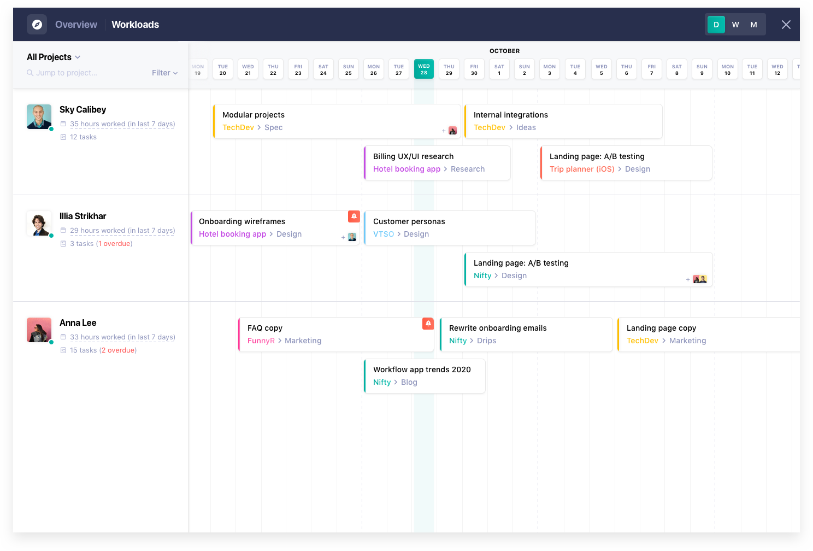
The idea
In 2016, remote teams were juggling a chat tool, a task board, and a docs app — and losing context between them. Nifty's bet was simple: put them in one place, and make that place feel as fast as any single-purpose tool. I joined as the first designer to turn the bet into an MVP, then stayed six years to grow it into a platform.
My responsibilities over that time: conducting user interviews, conceptualising features, prioritising them and planning weekly design sprints, tracking how designs perform in Mixpanel, running A/B tests, designing the UI across every device, and keeping the UI guide honest.
Learning from the teams who'd switch
Early on I built a UX questionnaire into the product itself — company size, current tools, biggest workflow headaches, when they planned to switch — and followed up with interviews. It shaped the launch order: discussions and tasks first, because that's where context was being lost; docs, forms, and reporting once teams were living in the tool.
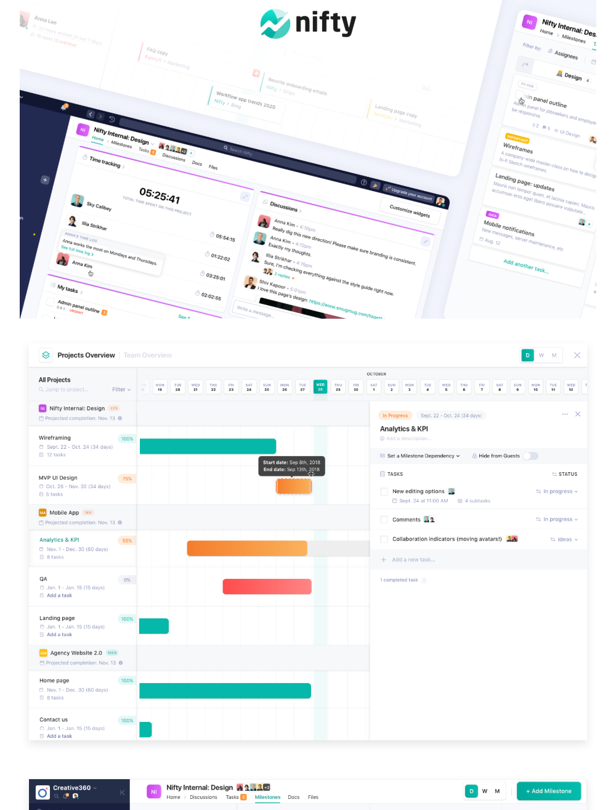
One workspace, many views
Discussions with context
Threads sit next to the work they're about, with files, link previews, and task mentions inline — so a conversation doesn't need to be re-explained in a ticket.
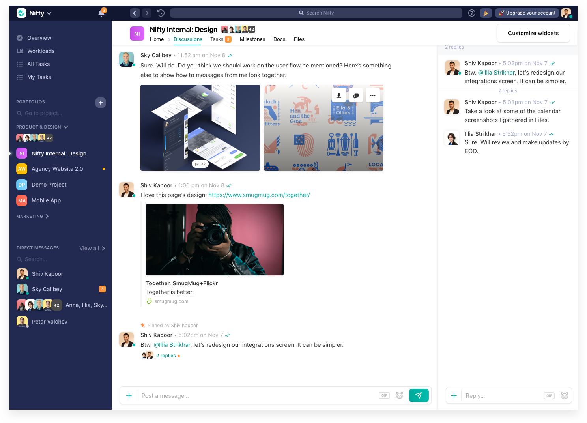
Tasks in five views
Kanban, list, timeline, calendar, and swimlane — the same tasks, re-grouped for how each team thinks. Budget tracking and time sit on the task itself, not in a separate report.
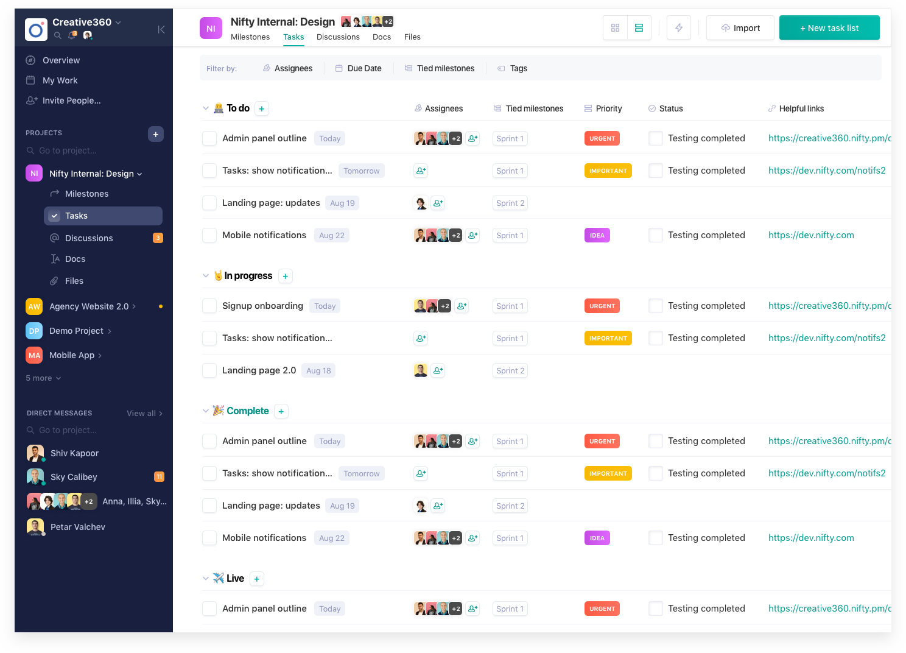
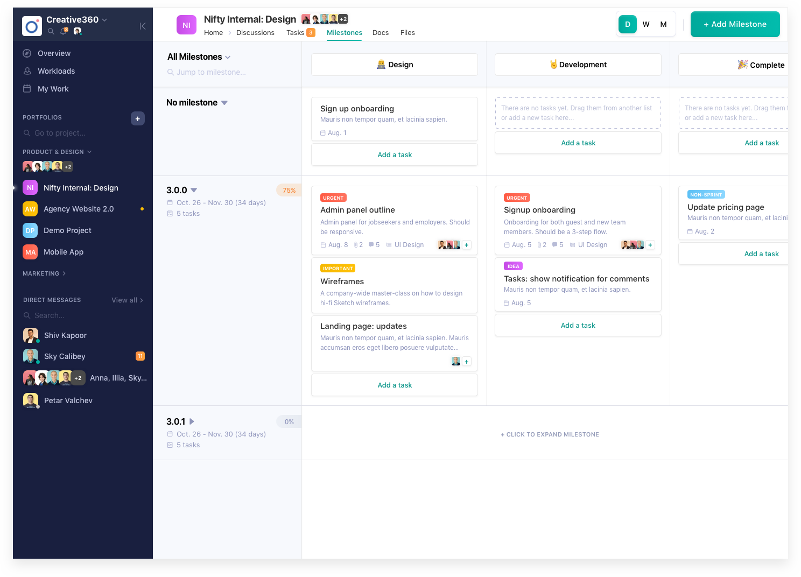
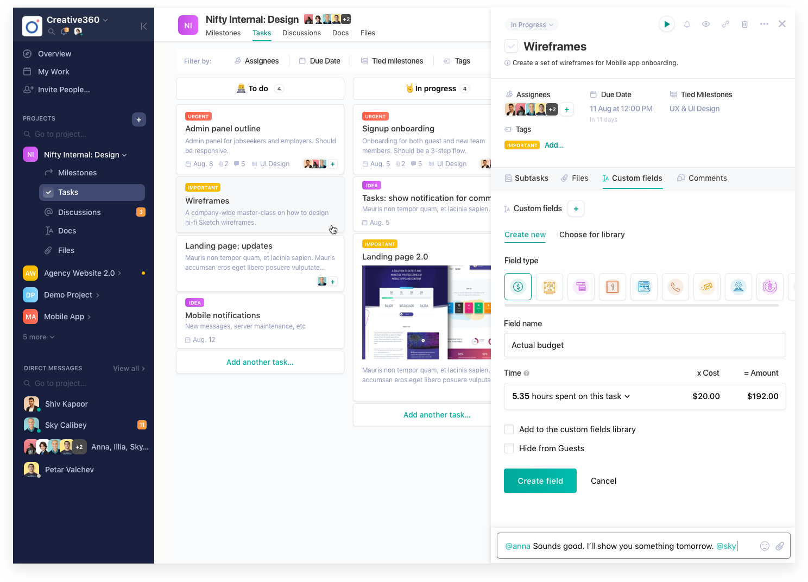
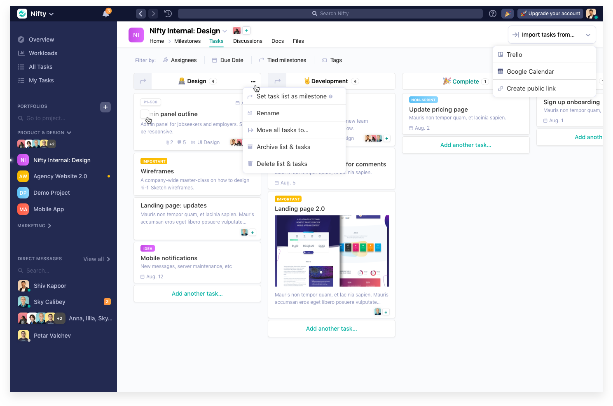
Roadmaps, projects, workloads
Milestone-based roadmaps (Gantt) roll up into a projects overview; workloads show who is over capacity before it becomes a problem.
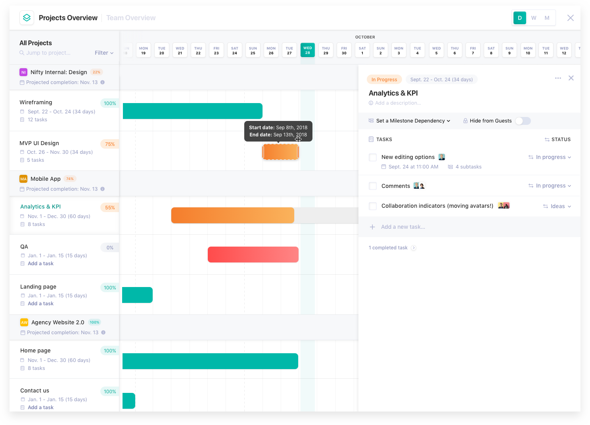
Docs and forms
A docs editor with collaboration and sharing, and a form builder (short text, long text, dropdown, multi-select…) whose submissions become tasks.
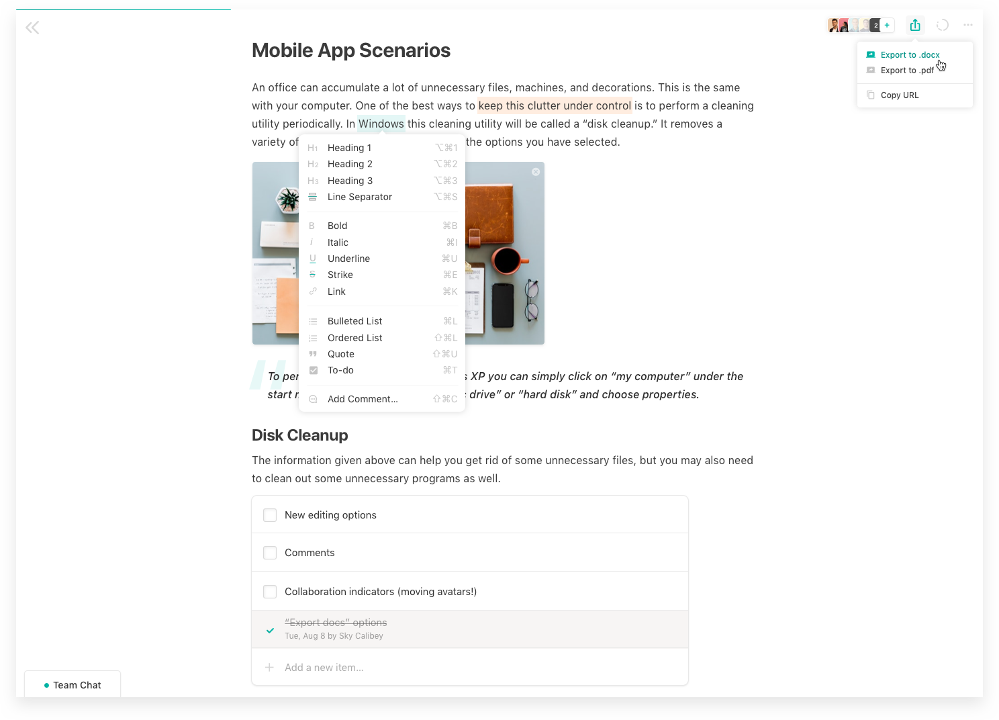
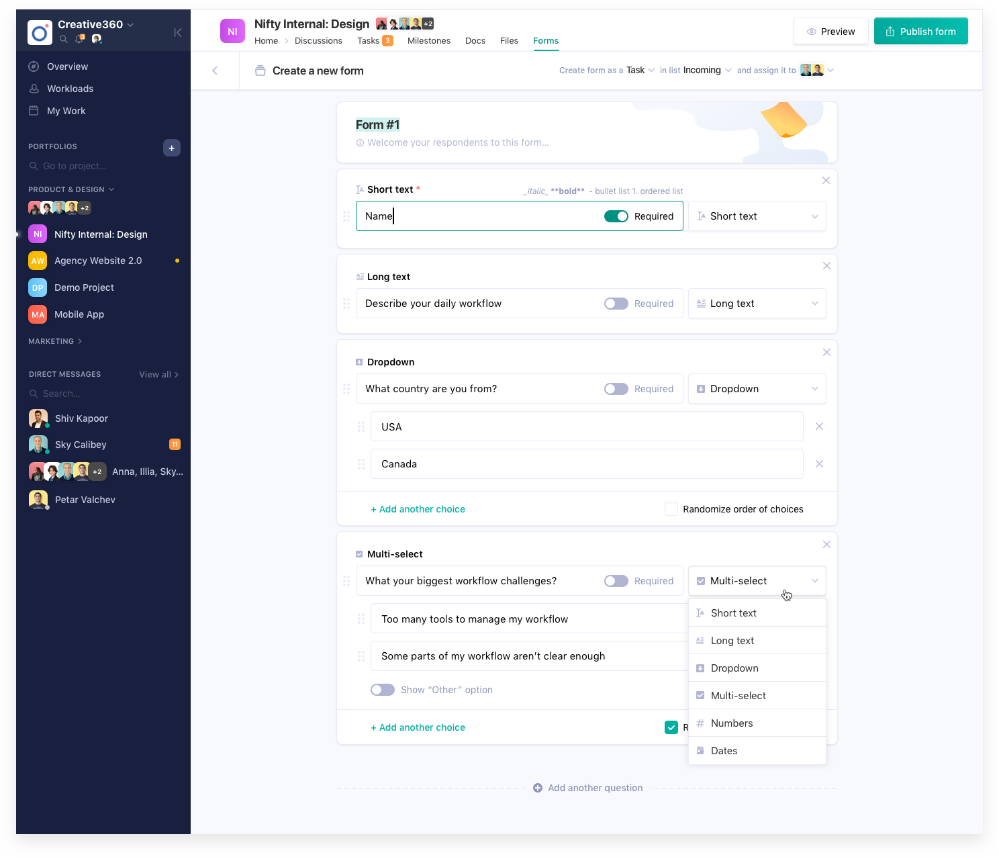
People
Team overview and member profiles make capacity and ownership visible across projects.
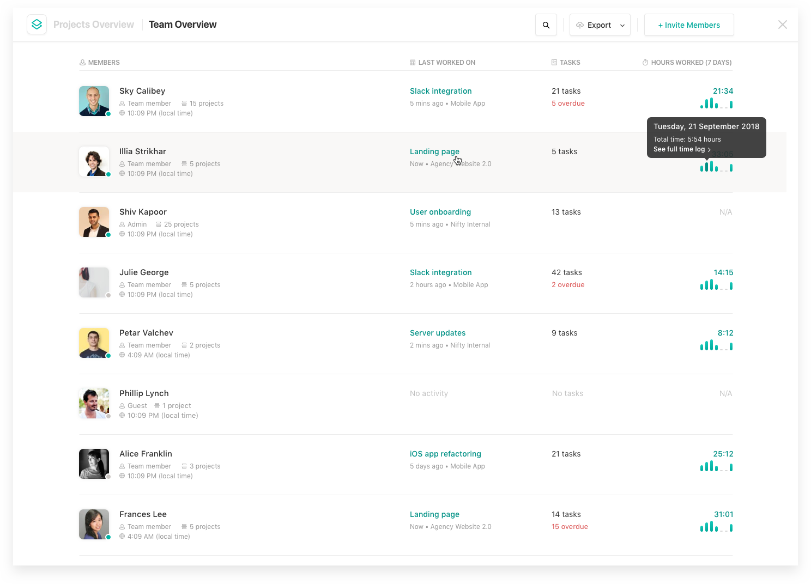
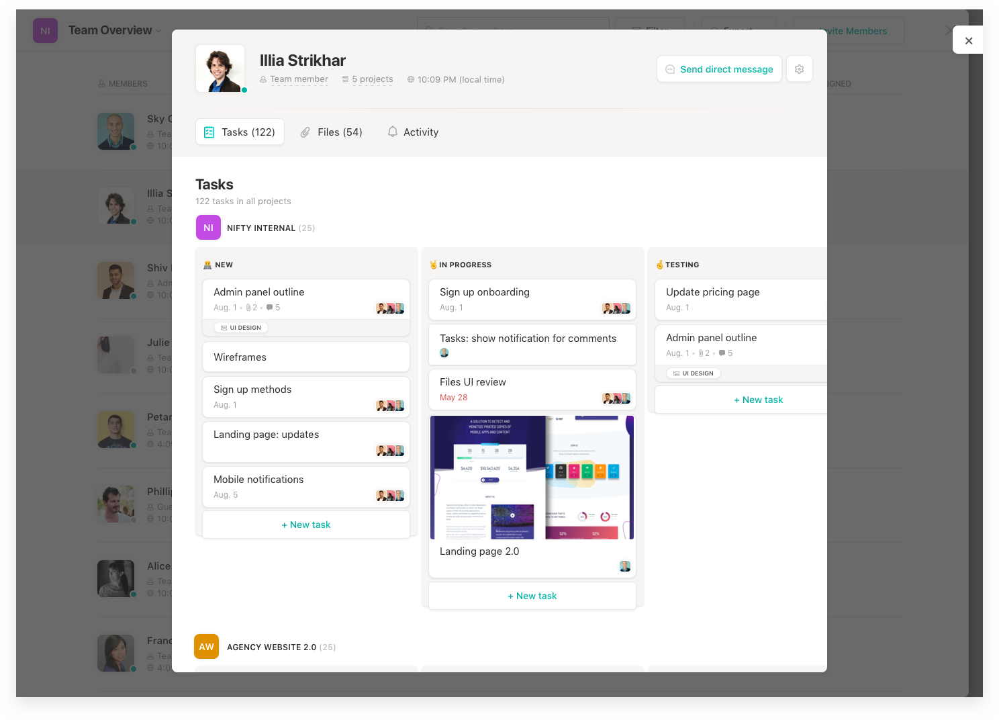
The system that held it together
Four platforms over six years only works with a design system that evolves with the product. I built and maintained it — components, states, and a UI guide — so Web, iOS, Android, and Mac could ship the same feature without four interpretations. Mixpanel and A/B tests told us which patterns earned their place; the rest got cut.
Results
Nifty launched across all four platforms and was adopted by tens of thousands of remote teams worldwide. It's consistently praised in reviews for a flawless UX and a clean UI — which, six years in, still feels like the nicest thing anyone can say about a project management tool.